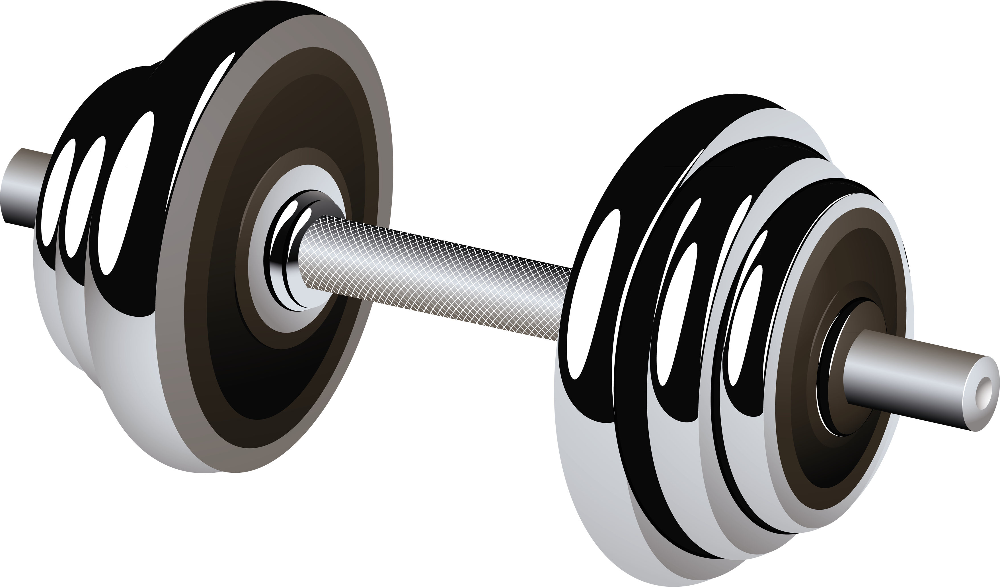
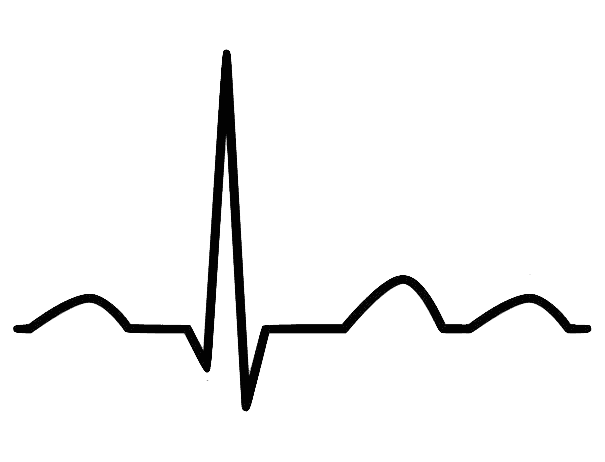

Miten WellTech auttaa sinua hyvinvointisi seurannassa?

Yhteystiedot
 Olemme joukko nuoria yrittäjiä, jotka uskovat HRV-tiedon ja treeniohjelman voimaan hyvinvoinnin seurannassa.
Sykevälivaihtelua tai HRV:tä käytetään fysiologisiin mittauksiin kuten VO2-maksimaalinen hapenottokyky, SV-stressitesti, suoritustaso, anaerobinen kynnys ja harjoituksen tehokkuus. Yhdistämällä HRV-seurannan henkilökohtaiseen treeniohjelmaasi voit saavuttaa nopeasti, tehokkaasti sekä ennen kaikkea turvallisesti uusia tasoja kuntosi kehityksessä.